SD1.5 対応 おすすめLoRA一覧
対応モデルごとに分類されたLoRA一覧です。各カテゴリーを選択してください。全 985 ファイル。
loras (1)
Flux (168)
Illustrious (196)
Pony (104)
SD1.5 (264)
SDXL (23)
Unknown (124)
WanVideo (106)
SD1.5 (100 items on this page / Total 264 items)
SD1.5
全般
hatsunemiku1-000006
「hatsunemiku1-000006」に特化した追加学習モデルです。Stable DiffusionでのAI画像生成にLoRAを導入し、特定要素の再現性を劇的に向上。効率的かつ高品質なビジュアルを求める全てのAI絵師必見のモデルです。
Size: 38,485,956 bytes
SD1.5
全般
hayasaka_ai_v2
「hayasaka_ai_v2」に特化した追加学習モデルです。Stable DiffusionでのAI画像生成にLoRAを導入し、特定要素の再現性を劇的に向上。効率的かつ高品質なビジュアルを求める全てのAI絵師必見のモデルです。
Size: 37,861,388 bytes
SD1.5
全般
HertaStarRailV1
「HertaStarRailV1」に特化した追加学習モデルです。Stable DiffusionでのAI画像生成にLoRAを導入し、特定要素の再現性を劇的に向上。効率的かつ高品質なビジュアルを求める全てのAI絵師必見のモデルです。
Size: 75,610,670 bytes
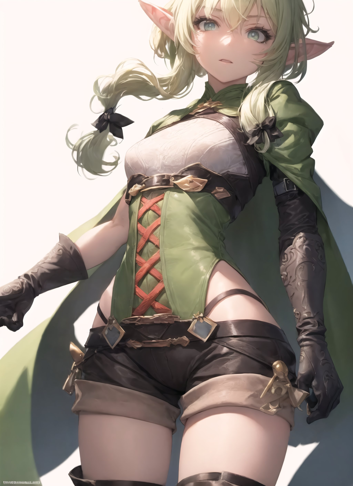
SD1.5
全般
highelf1-000014
「highelf1-000014」に特化した追加学習モデルです。Stable DiffusionでのAI画像生成にLoRAを導入し、特定要素の再現性を劇的に向上。効率的かつ高品質なビジュアルを求める全てのAI絵師必見のモデルです。
Size: 9,594,170 bytes
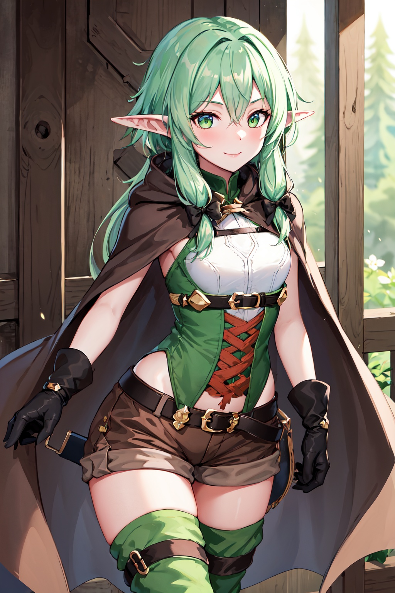
SD1.5
全般
high_elf_archer_v1
「high_elf_archer_v1」に特化した追加学習モデルです。Stable DiffusionでのAI画像生成にLoRAを導入し、特定要素の再現性を劇的に向上。効率的かつ高品質なビジュアルを求める全てのAI絵師必見のモデルです。
Size: 37,868,350 bytes
SD1.5
全般
hinata-000065
「hinata-000065」に特化した追加学習モデルです。Stable DiffusionでのAI画像生成にLoRAを導入し、特定要素の再現性を劇的に向上。効率的かつ高品質なビジュアルを求める全てのAI絵師必見のモデルです。
Size: 151,073,665 bytes
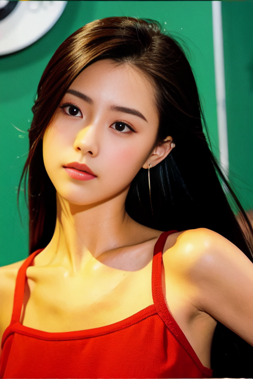
SD1.5
全般
hongkongreal
「hongkongreal」に特化した追加学習モデルです。Stable DiffusionでのAI画像生成にLoRAを導入し、特定要素の再現性を劇的に向上。効率的かつ高品質なビジュアルを求める全てのAI絵師必見のモデルです。
Size: 37,865,637 bytes

SD1.5
全般
Honkai Star Rail-bronya rand
「Honkai Star Rail-bronya rand」に特化した追加学習モデルです。Stable DiffusionでのAI画像生成にLoRAを導入し、特定要素の再現性を劇的に向上。効率的かつ高品質なビジュアルを求める全てのAI絵師必見のモデルです。
Size: 75,611,442 bytes
SD1.5
全般
hoshimachi_suisei_v1
「hoshimachi_suisei_v1」に特化した追加学習モデルです。Stable DiffusionでのAI画像生成にLoRAを導入し、特定要素の再現性を劇的に向上。効率的かつ高品質なビジュアルを求める全てのAI絵師必見のモデルです。
Size: 75,626,689 bytes
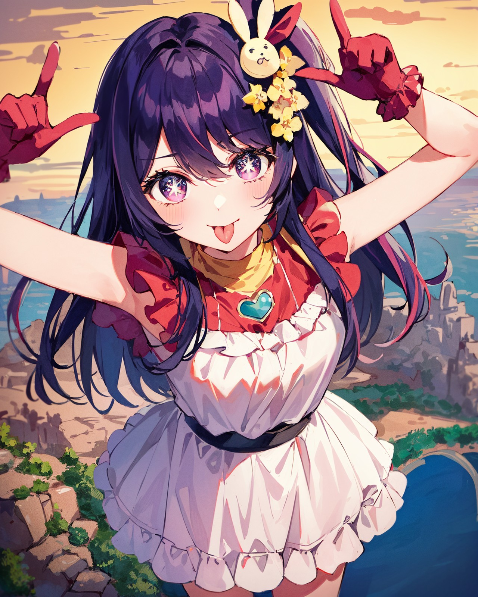
SD1.5
全般
HoshinoAi_v9-000007
「HoshinoAi_v9-000007」に特化した追加学習モデルです。Stable DiffusionでのAI画像生成にLoRAを導入し、特定要素の再現性を劇的に向上。効率的かつ高品質なビジュアルを求める全てのAI絵師必見のモデルです。
Size: 151,123,445 bytes
SD1.5
全般
HOTD_v0.4
「HOTD_v0.4」に特化した追加学習モデルです。Stable DiffusionでのAI画像生成にLoRAを導入し、特定要素の再現性を劇的に向上。効率的かつ高品質なビジュアルを求める全てのAI絵師必見のモデルです。
Size: 19,054,879 bytes
SD1.5
全般
HoushouMarineV2LORA-000050
「HoushouMarineV2LORA-000050」に特化した追加学習モデルです。Stable DiffusionでのAI画像生成にLoRAを導入し、特定要素の再現性を劇的に向上。効率的かつ高品質なビジュアルを求める全てのAI絵師必見のモデルです。
Size: 37,880,399 bytes
SD1.5
全般
hutao_v2
「hutao_v2」に特化した追加学習モデルです。Stable DiffusionでのAI画像生成にLoRAを導入し、特定要素の再現性を劇的に向上。効率的かつ高品質なビジュアルを求める全てのAI絵師必見のモデルです。
Size: 151,121,710 bytes
SD1.5
全般
hyakumantenbara_salome_v1
「hyakumantenbara_salome_v1」に特化した追加学習モデルです。Stable DiffusionでのAI画像生成にLoRAを導入し、特定要素の再現性を劇的に向上。効率的かつ高品質なビジュアルを求める全てのAI絵師必見のモデルです。
Size: 37,861,388 bytes
SD1.5
全般
illya22outfits
「illya22outfits」に特化した追加学習モデルです。Stable DiffusionでのAI画像生成にLoRAを導入し、特定要素の再現性を劇的に向上。効率的かつ高品質なビジュアルを求める全てのAI絵師必見のモデルです。
Size: 75,670,662 bytes
SD1.5
全般
illyasviel_von_einzbern_(fate_kaleid_liner)_v1
「illyasviel_von_einzbern_(fate_kaleid_liner)_v1」に特化した追加学習モデルです。Stable DiffusionでのAI画像生成にLoRAを導入し、特定要素の再現性を劇的に向上。効率的かつ高品質なビジュアルを求める全てのAI絵師必見のモデルです。
Size: 37,861,776 bytes
SD1.5
全般
implied_fellatio_v2_b
「implied_fellatio_v2_b」に特化した追加学習モデルです。Stable DiffusionでのAI画像生成にLoRAを導入し、特定要素の再現性を劇的に向上。効率的かつ高品質なビジュアルを求める全てのAI絵師必見のモデルです。
Size: 9,566,912 bytes
SD1.5
全般
Ino
「Ino」に特化した追加学習モデルです。Stable DiffusionでのAI画像生成にLoRAを導入し、特定要素の再現性を劇的に向上。効率的かつ高品質なビジュアルを求める全てのAI絵師必見のモデルです。
Size: 75,622,019 bytes
SD1.5
全般
iono
「iono」に特化した追加学習モデルです。Stable DiffusionでのAI画像生成にLoRAを導入し、特定要素の再現性を劇的に向上。効率的かつ高品質なビジュアルを求める全てのAI絵師必見のモデルです。
Size: 151,117,709 bytes
SD1.5
全般
iono_v1-000006
「iono_v1-000006」に特化した追加学習モデルです。Stable DiffusionでのAI画像生成にLoRAを導入し、特定要素の再現性を劇的に向上。効率的かつ高品質なビジュアルを求める全てのAI絵師必見のモデルです。
Size: 75,618,070 bytes

SD1.5
全般
jabami yumeko_v10
「jabami yumeko_v10」に特化した追加学習モデルです。Stable DiffusionでのAI画像生成にLoRAを導入し、特定要素の再現性を劇的に向上。効率的かつ高品質なビジュアルを求める全てのAI絵師必見のモデルです。
Size: 37,871,317 bytes
SD1.5
全般
jessie-v2
「jessie-v2」に特化した追加学習モデルです。Stable DiffusionでのAI画像生成にLoRAを導入し、特定要素の再現性を劇的に向上。効率的かつ高品質なビジュアルを求める全てのAI絵師必見のモデルです。
Size: 37,861,272 bytes
SD1.5
全般
Jupiter10_16
「Jupiter10_16」に特化した追加学習モデルです。Stable DiffusionでのAI画像生成にLoRAを導入し、特定要素の再現性を劇的に向上。効率的かつ高品質なビジュアルを求める全てのAI絵師必見のモデルです。
Size: 18,991,427 bytes
SD1.5
全般
kafka-v3-nai-13ep-resize
「kafka-v3-nai-13ep-resize」に特化した追加学習モデルです。Stable DiffusionでのAI画像生成にLoRAを導入し、特定要素の再現性を劇的に向上。効率的かつ高品質なビジュアルを求める全てのAI絵師必見のモデルです。
Size: 48,599,448 bytes
SD1.5
全般
kamado_nezuko_offset
「kamado_nezuko_offset」に特化した追加学習モデルです。Stable DiffusionでのAI画像生成にLoRAを導入し、特定要素の再現性を劇的に向上。効率的かつ高品質なビジュアルを求める全てのAI絵師必見のモデルです。
Size: 151,108,831 bytes
SD1.5
全般
kamisato_ayaka
「kamisato_ayaka」に特化した追加学習モデルです。Stable DiffusionでのAI画像生成にLoRAを導入し、特定要素の再現性を劇的に向上。効率的かつ高品質なビジュアルを求める全てのAI絵師必見のモデルです。
Size: 37,883,758 bytes
SD1.5
全般
karylV1
「karylV1」に特化した追加学習モデルです。Stable DiffusionでのAI画像生成にLoRAを導入し、特定要素の再現性を劇的に向上。効率的かつ高品質なビジュアルを求める全てのAI絵師必見のモデルです。
Size: 37,863,814 bytes
SD1.5
全般
KashimaV1B-000010
「KashimaV1B-000010」に特化した追加学習モデルです。Stable DiffusionでのAI画像生成にLoRAを導入し、特定要素の再現性を劇的に向上。効率的かつ高品質なビジュアルを求める全てのAI絵師必見のモデルです。
Size: 75,639,119 bytes
SD1.5
全般
kasumigaoka_utaha_v2-1
「kasumigaoka_utaha_v2-1」に特化した追加学習モデルです。Stable DiffusionでのAI画像生成にLoRAを導入し、特定要素の再現性を劇的に向上。効率的かつ高品質なビジュアルを求める全てのAI絵師必見のモデルです。
Size: 37,861,388 bytes
SD1.5
全般
katou_megumi_v2
「katou_megumi_v2」に特化した追加学習モデルです。Stable DiffusionでのAI画像生成にLoRAを導入し、特定要素の再現性を劇的に向上。効率的かつ高品質なビジュアルを求める全てのAI絵師必見のモデルです。
Size: 37,861,388 bytes
SD1.5
全般
keqing_lion_optimizer_dim64_loraModel_5e-3noise_token1_4-3-2023
「keqing_lion_optimizer_dim64_loraModel_5e-3noise_token1_4-3-2023」に特化した追加学習モデルです。Stable DiffusionでのAI画像生成にLoRAを導入し、特定要素の再現性を劇的に向上。効率的かつ高品質なビジュアルを求める全てのAI絵師必見のモデルです。
Size: 151,122,475 bytes
SD1.5
全般
kitagawa_marin_v1-1
「kitagawa_marin_v1-1」に特化した追加学習モデルです。Stable DiffusionでのAI画像生成にLoRAを導入し、特定要素の再現性を劇的に向上。効率的かつ高品質なビジュアルを求める全てのAI絵師必見のモデルです。
Size: 37,861,388 bytes

SD1.5
全般
Kizuki - To Love Ru - Momo Velia Deviluke
「Kizuki - To Love Ru - Momo Velia Deviluke」に特化した追加学習モデルです。Stable DiffusionでのAI画像生成にLoRAを導入し、特定要素の再現性を劇的に向上。効率的かつ高品質なビジュアルを求める全てのAI絵師必見のモデルです。
Size: 37,861,176 bytes
SD1.5
全般
kizuna_ai_v10
「kizuna_ai_v10」に特化した追加学習モデルです。Stable DiffusionでのAI画像生成にLoRAを導入し、特定要素の再現性を劇的に向上。効率的かつ高品質なビジュアルを求める全てのAI絵師必見のモデルです。
Size: 151,117,086 bytes
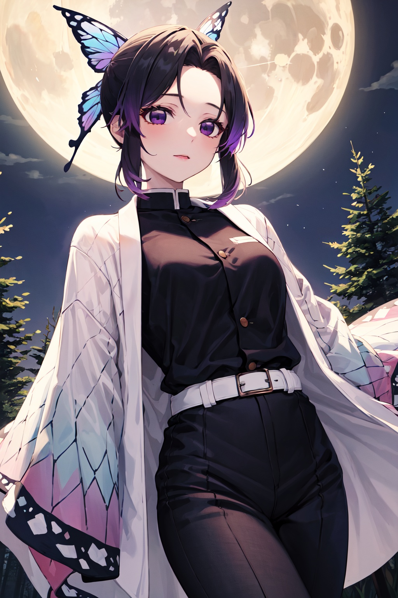
SD1.5
全般
kochou_shinobu_v1.2
「kochou_shinobu_v1.2」に特化した追加学習モデルです。Stable DiffusionでのAI画像生成にLoRAを導入し、特定要素の再現性を劇的に向上。効率的かつ高品質なビジュアルを求める全てのAI絵師必見のモデルです。
Size: 37,867,228 bytes
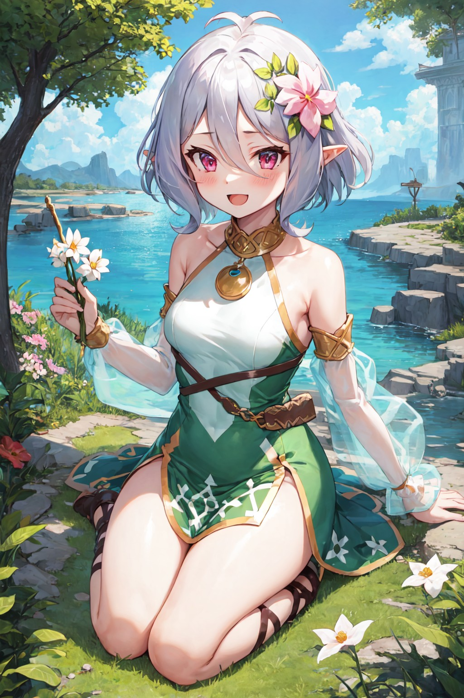
SD1.5
全般
kokkoro_v1
「kokkoro_v1」に特化した追加学習モデルです。Stable DiffusionでのAI画像生成にLoRAを導入し、特定要素の再現性を劇的に向上。効率的かつ高品質なビジュアルを求める全てのAI絵師必見のモデルです。
Size: 37,863,926 bytes
SD1.5
全般
kokomi_1024_Adam8_dim64_kohyaLoRA_fp32_8e-2noise_token2_24-3-2023
「kokomi_1024_Adam8_dim64_kohyaLoRA_fp32_8e-2noise_token2_24-3-2023」に特化した追加学習モデルです。Stable DiffusionでのAI画像生成にLoRAを導入し、特定要素の再現性を劇的に向上。効率的かつ高品質なビジュアルを求める全てのAI絵師必見のモデルです。
Size: 151,125,969 bytes
SD1.5
全般
lacus_clyne_v10
「lacus_clyne_v10」に特化した追加学習モデルです。Stable DiffusionでのAI画像生成にLoRAを導入し、特定要素の再現性を劇的に向上。効率的かつ高品質なビジュアルを求める全てのAI絵師必見のモデルです。
Size: 151,121,353 bytes
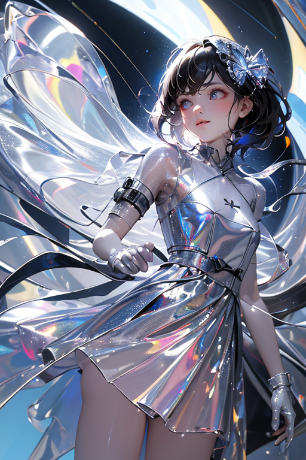
SD1.5
全般
laser0626
「laser0626」に特化した追加学習モデルです。Stable DiffusionでのAI画像生成にLoRAを導入し、特定要素の再現性を劇的に向上。効率的かつ高品質なビジュアルを求める全てのAI絵師必見のモデルです。
Size: 75,614,821 bytes
SD1.5
全般
LeMalin_V7_8dim_e6
「LeMalin_V7_8dim_e6」に特化した追加学習モデルです。Stable DiffusionでのAI画像生成にLoRAを導入し、特定要素の再現性を劇的に向上。効率的かつ高品質なビジュアルを求める全てのAI絵師必見のモデルです。
Size: 9,595,127 bytes

SD1.5
全般
licking-nipple handjob 64 3-000006
「licking-nipple handjob 64 3-000006」に特化した追加学習モデルです。Stable DiffusionでのAI画像生成にLoRAを導入し、特定要素の再現性を劇的に向上。効率的かつ高品質なビジュアルを求める全てのAI絵師必見のモデルです。
Size: 75,621,640 bytes
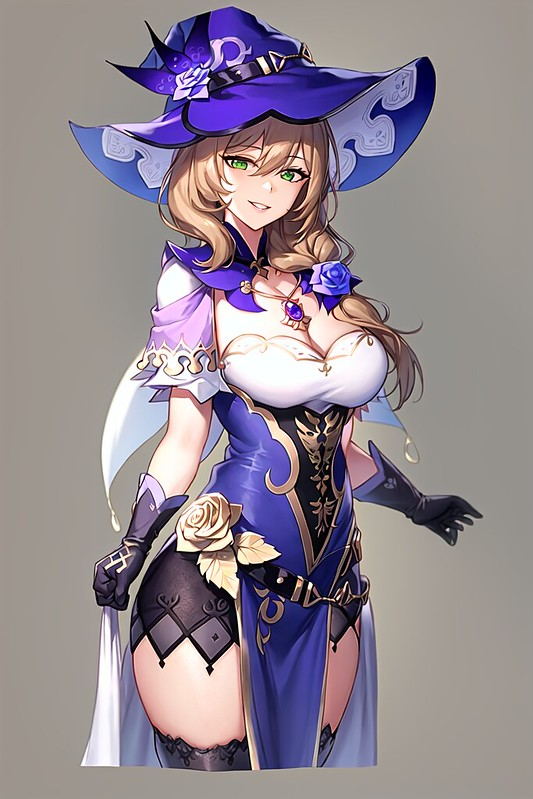
SD1.5
全般
Lisa_Hard
「Lisa_Hard」に特化した追加学習モデルです。Stable DiffusionでのAI画像生成にLoRAを導入し、特定要素の再現性を劇的に向上。効率的かつ高品質なビジュアルを求める全てのAI絵師必見のモデルです。
Size: 151,073,665 bytes
SD1.5
全般
LisciaV1.0
「LisciaV1.0」に特化した追加学習モデルです。Stable DiffusionでのAI画像生成にLoRAを導入し、特定要素の再現性を劇的に向上。効率的かつ高品質なビジュアルを求める全てのAI絵師必見のモデルです。
Size: 9,551,096 bytes
SD1.5
全般
lize_helesta_v10
「lize_helesta_v10」に特化した追加学習モデルです。Stable DiffusionでのAI画像生成にLoRAを導入し、特定要素の再現性を劇的に向上。効率的かつ高品質なビジュアルを求める全てのAI絵師必見のモデルです。
Size: 37,892,214 bytes

SD1.5
全般
lora-dim8-peace-v0-3_sd-1-5
「lora-dim8-peace-v0-3_sd-1-5」に特化した追加学習モデルです。Stable DiffusionでのAI画像生成にLoRAを導入し、特定要素の再現性を劇的に向上。効率的かつ高品質なビジュアルを求める全てのAI絵師必見のモデルです。
Size: 39,824,290 bytes

SD1.5
全般
loraOshinoShinobu-v1
「loraOshinoShinobu-v1」に特化した追加学習モデルです。Stable DiffusionでのAI画像生成にLoRAを導入し、特定要素の再現性を劇的に向上。効率的かつ高品質なビジュアルを求める全てのAI絵師必見のモデルです。
Size: 151,121,110 bytes

SD1.5
全般
love is war
「love is war」に特化した追加学習モデルです。Stable DiffusionでのAI画像生成にLoRAを導入し、特定要素の再現性を劇的に向上。効率的かつ高品質なビジュアルを求める全てのAI絵師必見のモデルです。
Size: 19,065,100 bytes
SD1.5
全般
lucy_heartfilia_v11
「lucy_heartfilia_v11」に特化した追加学習モデルです。Stable DiffusionでのAI画像生成にLoRAを導入し、特定要素の再現性を劇的に向上。効率的かつ高品質なビジュアルを求める全てのAI絵師必見のモデルです。
Size: 37,871,457 bytes

SD1.5
全般
lumine1-000008
「lumine1-000008」に特化した追加学習モデルです。Stable DiffusionでのAI画像生成にLoRAを導入し、特定要素の再現性を劇的に向上。効率的かつ高品質なビジュアルを求める全てのAI絵師必見のモデルです。
Size: 19,082,285 bytes
SD1.5
全般
lunamaria_hawke_v10
「lunamaria_hawke_v10」に特化した追加学習モデルです。Stable DiffusionでのAI画像生成にLoRAを導入し、特定要素の再現性を劇的に向上。効率的かつ高品質なビジュアルを求める全てのAI絵師必見のモデルです。
Size: 37,868,170 bytes
SD1.5
全般
Madoka
「Madoka」に特化した追加学習モデルです。Stable DiffusionでのAI画像生成にLoRAを導入し、特定要素の再現性を劇的に向上。効率的かつ高品質なビジュアルを求める全てのAI絵師必見のモデルです。
Size: 37,862,535 bytes
SD1.5
全般
makima_offset
「makima_offset」に特化した追加学習モデルです。Stable DiffusionでのAI画像生成にLoRAを導入し、特定要素の再現性を劇的に向上。効率的かつ高品質なビジュアルを求める全てのAI絵師必見のモデルです。
Size: 151,073,665 bytes
SD1.5
全般
MakinamiMariV1-000008
「MakinamiMariV1-000008」に特化した追加学習モデルです。Stable DiffusionでのAI画像生成にLoRAを導入し、特定要素の再現性を劇的に向上。効率的かつ高品質なビジュアルを求める全てのAI絵師必見のモデルです。
Size: 151,123,143 bytes
SD1.5
全般
MarieroseV1
「MarieroseV1」に特化した追加学習モデルです。Stable DiffusionでのAI画像生成にLoRAを導入し、特定要素の再現性を劇的に向上。効率的かつ高品質なビジュアルを求める全てのAI絵師必見のモデルです。
Size: 37,862,595 bytes
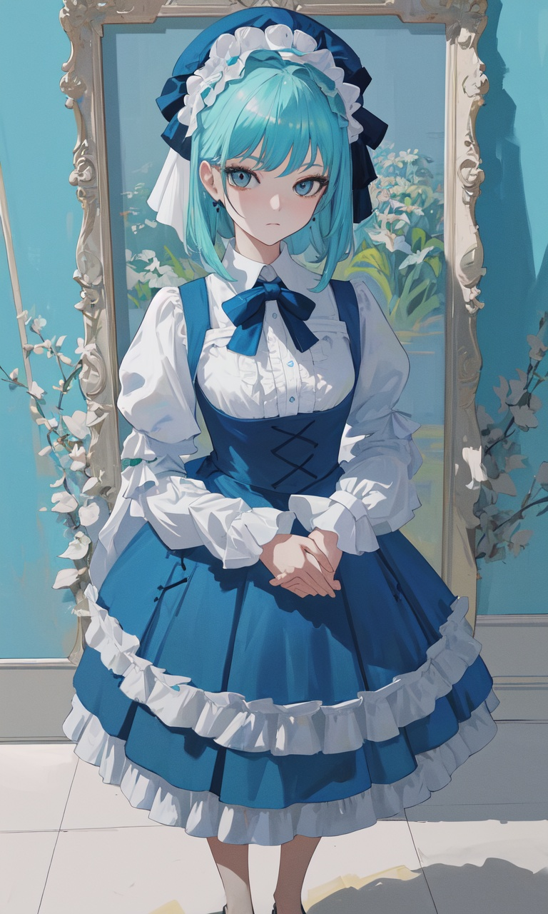
SD1.5
全般
marieV1.0
「marieV1.0」に特化した追加学習モデルです。Stable DiffusionでのAI画像生成にLoRAを導入し、特定要素の再現性を劇的に向上。効率的かつ高品質なビジュアルを求める全てのAI絵師必見のモデルです。
Size: 9,550,024 bytes
SD1.5
全般
MarineV1
「MarineV1」に特化した追加学習モデルです。Stable DiffusionでのAI画像生成にLoRAを導入し、特定要素の再現性を劇的に向上。効率的かつ高品質なビジュアルを求める全てのAI絵師必見のモデルです。
Size: 9,550,952 bytes

SD1.5
全般
marinkitagawas1-lora-nochekaiser
「marinkitagawas1-lora-nochekaiser」に特化した追加学習モデルです。Stable DiffusionでのAI画像生成にLoRAを導入し、特定要素の再現性を劇的に向上。効率的かつ高品質なビジュアルを求める全てのAI絵師必見のモデルです。
Size: 37,928,096 bytes
SD1.5
全般
marnie_v1
「marnie_v1」に特化した追加学習モデルです。Stable DiffusionでのAI画像生成にLoRAを導入し、特定要素の再現性を劇的に向上。効率的かつ高品質なビジュアルを求める全てのAI絵師必見のモデルです。
Size: 37,880,597 bytes
SD1.5
全般
MatoiRyuukoV3
「MatoiRyuukoV3」に特化した追加学習モデルです。Stable DiffusionでのAI画像生成にLoRAを導入し、特定要素の再現性を劇的に向上。効率的かつ高品質なビジュアルを求める全てのAI絵師必見のモデルです。
Size: 151,129,453 bytes
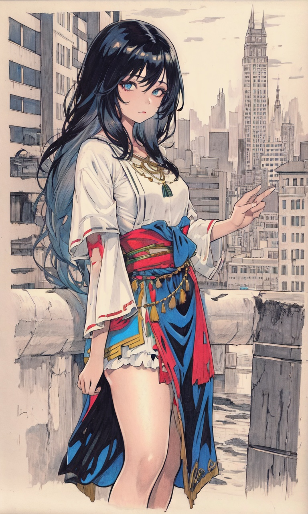
SD1.5
全般
MedsonlimaV1.0
「MedsonlimaV1.0」に特化した追加学習モデルです。Stable DiffusionでのAI画像生成にLoRAを導入し、特定要素の再現性を劇的に向上。効率的かつ高品質なビジュアルを求める全てのAI絵師必見のモデルです。
Size: 9,550,344 bytes
SD1.5
全般
MeguminWinterOutfit
「MeguminWinterOutfit」に特化した追加学習モデルです。Stable DiffusionでのAI画像生成にLoRAを導入し、特定要素の再現性を劇的に向上。効率的かつ高品質なビジュアルを求める全てのAI絵師必見のモデルです。
Size: 151,112,576 bytes
SD1.5
全般
mercury_v2
「mercury_v2」に特化した追加学習モデルです。Stable DiffusionでのAI画像生成にLoRAを導入し、特定要素の再現性を劇的に向上。効率的かつ高品質なビジュアルを求める全てのAI絵師必見のモデルです。
Size: 37,870,941 bytes
SD1.5
全般
MidorikawaHanaV8
「MidorikawaHanaV8」に特化した追加学習モデルです。Stable DiffusionでのAI画像生成にLoRAを導入し、特定要素の再現性を劇的に向上。効率的かつ高品質なビジュアルを求める全てのAI絵師必見のモデルです。
Size: 75,610,934 bytes
SD1.5
全般
mikasa_ackerman_v1
「mikasa_ackerman_v1」に特化した追加学習モデルです。Stable DiffusionでのAI画像生成にLoRAを導入し、特定要素の再現性を劇的に向上。効率的かつ高品質なビジュアルを求める全てのAI絵師必見のモデルです。
Size: 37,861,388 bytes
SD1.5
全般
milimF-000020
「milimF-000020」に特化した追加学習モデルです。Stable DiffusionでのAI画像生成にLoRAを導入し、特定要素の再現性を劇的に向上。効率的かつ高品質なビジュアルを求める全てのAI絵師必見のモデルです。
Size: 10,914,594 bytes
SD1.5
全般
minamoto_no_raikou_v1
「minamoto_no_raikou_v1」に特化した追加学習モデルです。Stable DiffusionでのAI画像生成にLoRAを導入し、特定要素の再現性を劇的に向上。効率的かつ高品質なビジュアルを求める全てのAI絵師必見のモデルです。
Size: 37,881,024 bytes
SD1.5
全般
minato_aqua_(neko)_v1
「minato_aqua_(neko)_v1」に特化した追加学習モデルです。Stable DiffusionでのAI画像生成にLoRAを導入し、特定要素の再現性を劇的に向上。効率的かつ高品質なビジュアルを求める全てのAI絵師必見のモデルです。
Size: 151,111,160 bytes
SD1.5
全般
minato_aqua_v1
「minato_aqua_v1」に特化した追加学習モデルです。Stable DiffusionでのAI画像生成にLoRAを導入し、特定要素の再現性を劇的に向上。効率的かつ高品質なビジュアルを求める全てのAI絵師必見のモデルです。
Size: 37,861,388 bytes
SD1.5
全般
miorine_rembran_v1_1
「miorine_rembran_v1_1」に特化した追加学習モデルです。Stable DiffusionでのAI画像生成にLoRAを導入し、特定要素の再現性を劇的に向上。効率的かつ高品質なビジュアルを求める全てのAI絵師必見のモデルです。
Size: 75,624,070 bytes
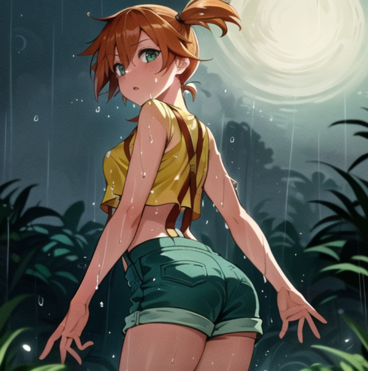
SD1.5
全般
Misty
「Misty」に特化した追加学習モデルです。Stable DiffusionでのAI画像生成にLoRAを導入し、特定要素の再現性を劇的に向上。効率的かつ高品質なビジュアルを求める全てのAI絵師必見のモデルです。
Size: 8,573,990 bytes
SD1.5
全般
mitsuba_greyvalley_v1
「mitsuba_greyvalley_v1」に特化した追加学習モデルです。Stable DiffusionでのAI画像生成にLoRAを導入し、特定要素の再現性を劇的に向上。効率的かつ高品質なビジュアルを求める全てのAI絵師必見のモデルです。
Size: 37,867,007 bytes
SD1.5
全般
mitsuri-05
「mitsuri-05」に特化した追加学習モデルです。Stable DiffusionでのAI画像生成にLoRAを導入し、特定要素の再現性を劇的に向上。効率的かつ高品質なビジュアルを求める全てのAI絵師必見のモデルです。
Size: 75,637,068 bytes
SD1.5
全般
mizuhara_chizuru_v2
「mizuhara_chizuru_v2」に特化した追加学習モデルです。Stable DiffusionでのAI画像生成にLoRAを導入し、特定要素の再現性を劇的に向上。効率的かつ高品質なビジュアルを求める全てのAI絵師必見のモデルです。
Size: 37,861,388 bytes
SD1.5
全般
MizukiYukikazeV1_1
「MizukiYukikazeV1_1」に特化した追加学習モデルです。Stable DiffusionでのAI画像生成にLoRAを導入し、特定要素の再現性を劇的に向上。効率的かつ高品質なビジュアルを求める全てのAI絵師必見のモデルです。
Size: 75,610,934 bytes
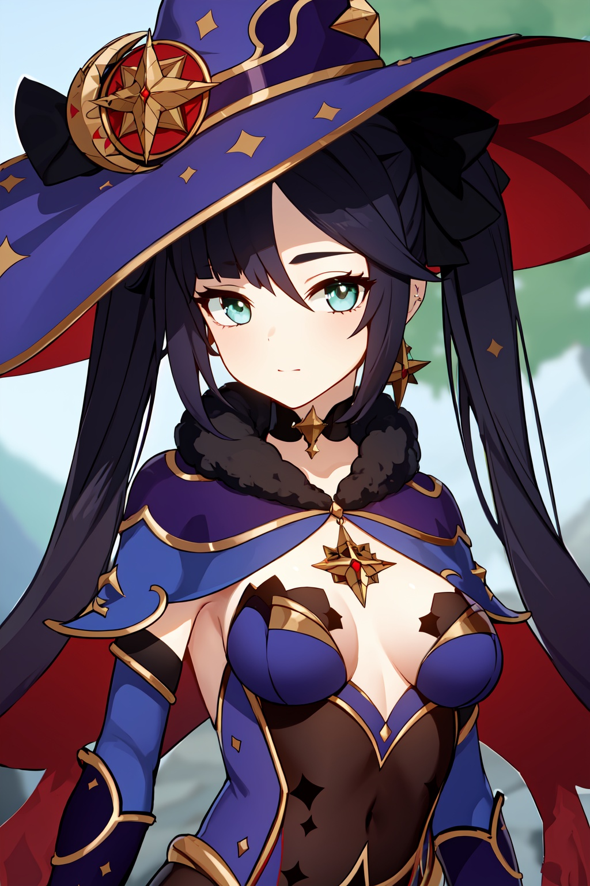
SD1.5
全般
Monav3
「Monav3」に特化した追加学習モデルです。Stable DiffusionでのAI画像生成にLoRAを導入し、特定要素の再現性を劇的に向上。効率的かつ高品質なビジュアルを求める全てのAI絵師必見のモデルです。
Size: 75,615,054 bytes
SD1.5
全般
MordredV1
「MordredV1」に特化した追加学習モデルです。Stable DiffusionでのAI画像生成にLoRAを導入し、特定要素の再現性を劇的に向上。効率的かつ高品質なビジュアルを求める全てのAI絵師必見のモデルです。
Size: 8,574,596 bytes
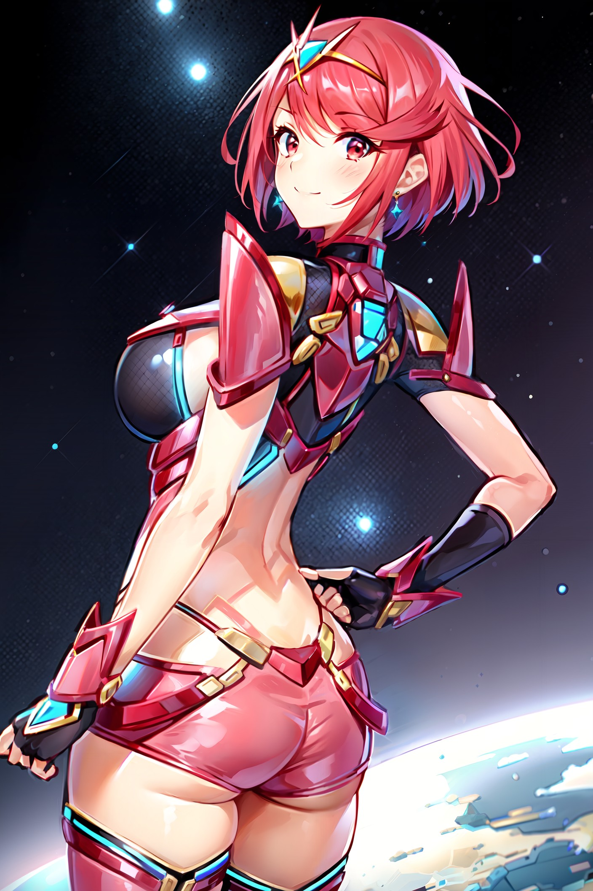
SD1.5
全般
mythra_pyra_pneuma-000050
「mythra_pyra_pneuma-000050」に特化した追加学習モデルです。Stable DiffusionでのAI画像生成にLoRAを導入し、特定要素の再現性を劇的に向上。効率的かつ高品質なビジュアルを求める全てのAI絵師必見のモデルです。
Size: 302,069,805 bytes
SD1.5
全般
nakano_miku_v10
「nakano_miku_v10」に特化した追加学習モデルです。Stable DiffusionでのAI画像生成にLoRAを導入し、特定要素の再現性を劇的に向上。効率的かつ高品質なビジュアルを求める全てのAI絵師必見のモデルです。
Size: 37,876,595 bytes
SD1.5
全般
nakano_nino_v10
「nakano_nino_v10」に特化した追加学習モデルです。Stable DiffusionでのAI画像生成にLoRAを導入し、特定要素の再現性を劇的に向上。効率的かつ高品質なビジュアルを求める全てのAI絵師必見のモデルです。
Size: 75,635,575 bytes
SD1.5
全般
naxidaV3
「naxidaV3」に特化した追加学習モデルです。Stable DiffusionでのAI画像生成にLoRAを導入し、特定要素の再現性を劇的に向上。効率的かつ高品質なビジュアルを求める全てのAI絵師必見のモデルです。
Size: 151,112,128 bytes
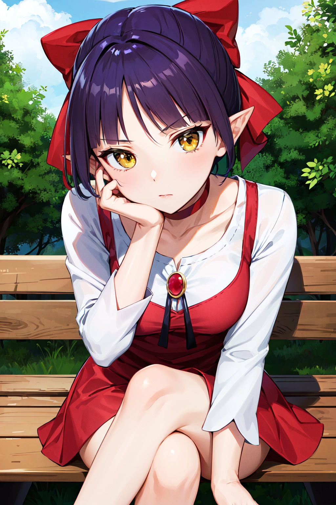
SD1.5
全般
nekomusume_v1
「nekomusume_v1」に特化した追加学習モデルです。Stable DiffusionでのAI画像生成にLoRAを導入し、特定要素の再現性を劇的に向上。効率的かつ高品質なビジュアルを求める全てのAI絵師必見のモデルです。
Size: 75,620,299 bytes
SD1.5
全般
Nijicool
「Nijicool」に特化した追加学習モデルです。Stable DiffusionでのAI画像生成にLoRAを導入し、特定要素の再現性を劇的に向上。効率的かつ高品質なビジュアルを求める全てのAI絵師必見のモデルです。
Size: 37,863,624 bytes

SD1.5
全般
nilou_1024_Lion_dim64_kohyaLoRA_fp32_3e-2noise_token2_20-3-2023
「nilou_1024_Lion_dim64_kohyaLoRA_fp32_3e-2noise_token2_20-3-2023」に特化した追加学習モデルです。Stable DiffusionでのAI画像生成にLoRAを導入し、特定要素の再現性を劇的に向上。効率的かつ高品質なビジュアルを求める全てのAI絵師必見のモデルです。
Size: 151,137,112 bytes

SD1.5
全般
ninomae ina'nis 5 outfits
「ninomae ina'nis 5 outfits」に特化した追加学習モデルです。Stable DiffusionでのAI画像生成にLoRAを導入し、特定要素の再現性を劇的に向上。効率的かつ高品質なビジュアルを求める全てのAI絵師必見のモデルです。
Size: 19,012,646 bytes
SD1.5
全般
nokezori_1.0_INS2
「nokezori_1.0_INS2」に特化した追加学習モデルです。Stable DiffusionでのAI画像生成にLoRAを導入し、特定要素の再現性を劇的に向上。効率的かつ高品質なビジュアルを求める全てのAI絵師必見のモデルです。
Size: 9,548,323 bytes
SD1.5
全般
OC
「OC」に特化した追加学習モデルです。Stable DiffusionでのAI画像生成にLoRAを導入し、特定要素の再現性を劇的に向上。効率的かつ高品質なビジュアルを求める全てのAI絵師必見のモデルです。
Size: 151,117,335 bytes
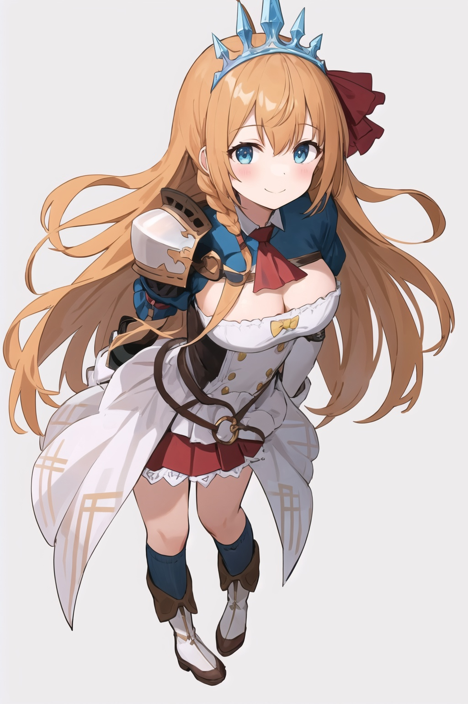
SD1.5
全般
pecorineV1
「pecorineV1」に特化した追加学習モデルです。Stable DiffusionでのAI画像生成にLoRAを導入し、特定要素の再現性を劇的に向上。効率的かつ高品質なビジュアルを求める全てのAI絵師必見のモデルです。
Size: 37,863,942 bytes
SD1.5
全般
pekora1-000009
「pekora1-000009」に特化した追加学習モデルです。Stable DiffusionでのAI画像生成にLoRAを導入し、特定要素の再現性を劇的に向上。効率的かつ高品質なビジュアルを求める全てのAI絵師必見のモデルです。
Size: 38,023,174 bytes
SD1.5
全般
pixel-portrait-v1
「pixel-portrait-v1」に特化した追加学習モデルです。Stable DiffusionでのAI画像生成にLoRAを導入し、特定要素の再現性を劇的に向上。効率的かつ高品質なビジュアルを求める全てのAI絵師必見のモデルです。
Size: 151,113,708 bytes
SD1.5
全般
PokeMarnie
「PokeMarnie」に特化した追加学習モデルです。Stable DiffusionでのAI画像生成にLoRAを導入し、特定要素の再現性を劇的に向上。効率的かつ高品質なビジュアルを求める全てのAI絵師必見のモデルです。
Size: 8,575,684 bytes
SD1.5
全般
POVDoggy
「POVDoggy」に特化した追加学習モデルです。Stable DiffusionでのAI画像生成にLoRAを導入し、特定要素の再現性を劇的に向上。効率的かつ高品質なビジュアルを求める全てのAI絵師必見のモデルです。
Size: 945,776 bytes
SD1.5
全般
PrinzEugenV4-15
「PrinzEugenV4-15」に特化した追加学習モデルです。Stable DiffusionでのAI画像生成にLoRAを導入し、特定要素の再現性を劇的に向上。効率的かつ高品質なビジュアルを求める全てのAI絵師必見のモデルです。
Size: 37,885,767 bytes
SD1.5
全般
PSCowgirl
「PSCowgirl」に特化した追加学習モデルです。Stable DiffusionでのAI画像生成にLoRAを導入し、特定要素の再現性を劇的に向上。効率的かつ高品質なビジュアルを求める全てのAI絵師必見のモデルです。
Size: 946,824 bytes
SD1.5
全般
qqq-footjob-v2
「qqq-footjob-v2」に特化した追加学習モデルです。Stable DiffusionでのAI画像生成にLoRAを導入し、特定要素の再現性を劇的に向上。効率的かつ高品質なビジュアルを求める全てのAI絵師必見のモデルです。
Size: 37,871,784 bytes
SD1.5
全般
quinella_(sao)_v10
「quinella_(sao)_v10」に特化した追加学習モデルです。Stable DiffusionでのAI画像生成にLoRAを導入し、特定要素の再現性を劇的に向上。効率的かつ高品質なビジュアルを求める全てのAI絵師必見のモデルです。
Size: 151,118,442 bytes
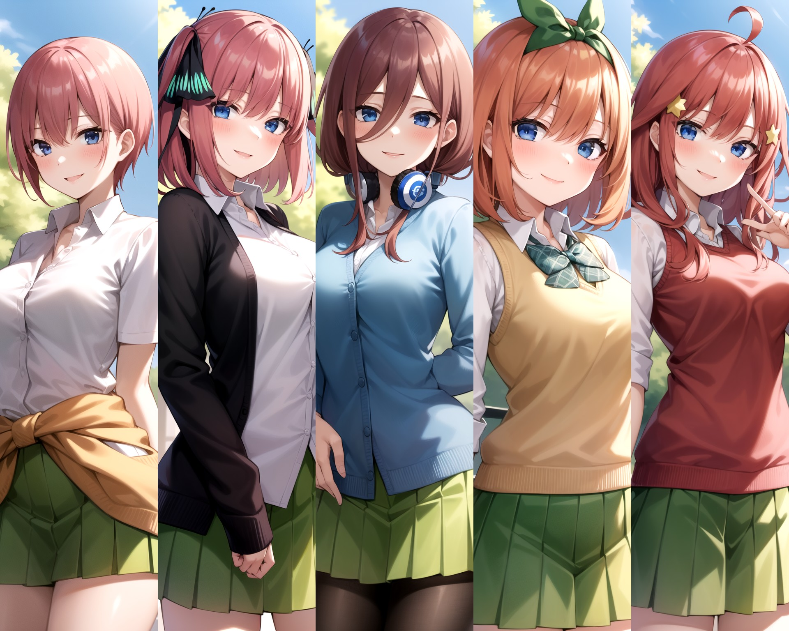
SD1.5
全般
quintuplets-10-new
「quintuplets-10-new」に特化した追加学習モデルです。Stable DiffusionでのAI画像生成にLoRAを導入し、特定要素の再現性を劇的に向上。効率的かつ高品質なビジュアルを求める全てのAI絵師必見のモデルです。
Size: 37,952,615 bytes

SD1.5
全般
raiden shogun_LoRA
「raiden shogun_LoRA」に特化した追加学習モデルです。Stable DiffusionでのAI画像生成にLoRAを導入し、特定要素の再現性を劇的に向上。効率的かつ高品質なビジュアルを求める全てのAI絵師必見のモデルです。
Size: 151,073,665 bytes
SD1.5
全般
raidenshogun1-000009
「raidenshogun1-000009」に特化した追加学習モデルです。Stable DiffusionでのAI画像生成にLoRAを導入し、特定要素の再現性を劇的に向上。効率的かつ高品質なビジュアルを求める全てのAI絵師必見のモデルです。
Size: 75,697,861 bytes
SD1.5
全般
ramen_v1.4
「ramen_v1.4」に特化した追加学習モデルです。Stable DiffusionでのAI画像生成にLoRAを導入し、特定要素の再現性を劇的に向上。効率的かつ高品質なビジュアルを求める全てのAI絵師必見のモデルです。
Size: 13,896,362 bytes
SD1.5
全般
ram_rezero_v1
「ram_rezero_v1」に特化した追加学習モデルです。Stable DiffusionでのAI画像生成にLoRAを導入し、特定要素の再現性を劇的に向上。効率的かつ高品質なビジュアルを求める全てのAI絵師必見のモデルです。
Size: 75,620,035 bytes